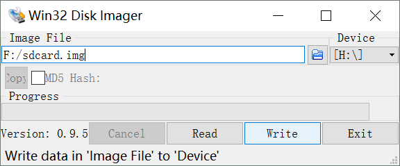
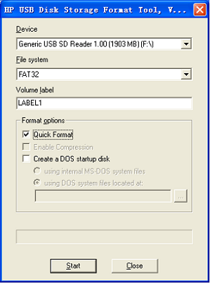

6. Update System
This section introduces the Linux system tf card boot, NAND Flash burn,NFS ROOT file system mount. CD image file description：
| File Name | Description |
|---|---|
| MLO | First stage bootloader（SPL), generated when compiling Buildroot |
| MLO_nand | First stage bootloader（SPL) for NAND, prebuild by myir from "board/myir/myd_c335x/" |
| MLO_sd | First stage bootloader（SPL) for TF Card, prebuild by myir from "board/myir/myd_c335x/" |
| MLO_emmc | First stage bootloader（SPL) for EMMC, prebuild by myir from "board/myir/myd_c335x/" |
| MLO_usbmsc | First stage bootloader（SPL) for USB Mass Storage, prebuild by myir from "board/myir/myd_c335x/" |
| u-boot.img | Second stage bootloader, generated when compiling Buildroot |
| u-boot_nand.img | Second stage bootloader for NAND, prebuild by myir from "board/myir/myd_c335x/" |
| u-boot_sd.img | Second stage bootloader for TF Card, prebuild by myir from "board/myir/myd_c335x/" |
| u-boot_emmc.img | Second stage bootloader for EMMC, prebuild by myir from "board/myir/myd_c335x/" |
| u-boot_usbmsc.img | Second stage bootloader for USB Mass Storage, prebuild by myir from "board/myir/myd_c335x/" |
| uEnv.txt | Default environment variables for U-boot |
| uEnv_ramdisk.txt | Environment variables for boot ramdisk images on TF/SD card. Need to be renamed to uEnv.txt |
| uEnv_sd.txt | Environment variables for boot images on TF/SD card. Need to be renamed to uEnv.txt |
| uEnv_sd_ramdisk.txt | Environment variables for boot ramdisk images on TF/SD card. Need to be renamed to uEnv.txt |
| uEnv_usbmsc.txt | Environment variables for boot images on USB Mass Storage. Need to be renamed to uEnv.txt |
| uEnv_usbmsc_ramdisk.txt | Environment variables for boot ramdisk images on USB Mass Storage. Need to be renamed to uEnv.txt |
| uEnv_mmc.txt | Environment variables for boot images on EMMC. Need to be renamed to uEnv.txt |
| zImage | Kernel image |
| myd_c335x.dtb | Device tree binary for MYD-AM335X with NAND Flash |
| myd_c335x_emmc.dtb | Device tree binary for MYD-AM335X with EMMC |
| myd_y335x.dtb | Device tree binary for MYD-AM335X-Y with NAND Flash |
| myd_y335x_emmc.dtb | Device tree binary for MYD-AM335X-Y with EMMC |
| myd_j335x.dtb | Device tree binary for MYD-AM335X-J with NAND Flash |
| myd_j335x_emmc.dtb | Device tree binary for MYD-AM335X-J with EMMC |
| rootfs.tar.gz | ramdisk filesystem compressed by gzip |
| rootfs.ubi | UBIFS filesystem image |
| ramdisk.gz | ramdisk filesystem compressed by gzip |
| sdcard.img | TF/SD/EMMC disk image |
uEnv*.txt are text files, they define the environment parameters for U-boot, and then determine the boot process of U-boot. We take the uEnv_ramdisk.txt as an example:
fdtfile define the device tree name of the board, devtype define the boot device type, devnum define the device number(0: TF Card, 1: EMMC). bootdir define the path of the image files on the boot partition. bootpart define the boot partition on the device(0:1 means the first partition on device 0).
uenvcmd define a script for U-boot, it will load kernel, device tree and bootup.
# This uEnv.txt file can contain additional environment settings that you
# want to set in U-Boot at boot time. This can be simple variables such
# as the serverip or custom variables. The format of this file is:
# variable=value
# NOTE: This file will be evaluated after the bootcmd is run and the
# bootcmd must be set to load this file if it exists (this is the
# default on all newer U-Boot images. This also means that some
# variables such as bootdelay cannot be changed by this file since
# it is not evaluated until the bootcmd is run.
#optargs=video=HDMI-A-1:800x600
# Uncomment the following line to enable HDMI display and disable LCD display.
fdtfile=myd_c335x.dtb
devtype=mmc
devnum=0
bootdir=/
bootpart=0:1
uenvcmd=if run loadimage; then run loadfdt; run loadramdisk; echo Booting from mmc${mmcdev} ...; run ramargs; print bootargs; bootz ${loadaddr} ${rdaddr} ${fdtaddr}; fi;
Note: Startup of the MYD-AM335X Before starting the development board, note the connection of the JP8 jumper, connect JP8-1 and JP8-2 will boot system from SD Card, JP8-2 and JP8-3 will boot system from NandFlash. To effect JP8’S connection modification, please repower up the board after modification.MYD-AM335X-Y for jp1, MYD-AM335X-J for jp6.
There are four boot modes for MYD-AM335X series development board to run embedded Linux system:
- Boot from TF/SD card(EXT4 file system).
- Boot from TF/SD card(Ramdisk file system).
- Boot from NAND Flash（Ubi file system for core board with NAND Flash).
- Boot from EMMC(EXT4 file system for core board with EMMC).
- Boot from Ethernet（NFS root for debug）.
Boot from TF/SD card(EXT4 file system)
Note: Writing
sdcard.imgwill format the TF card, please backup important files.
After building Buildroot, a TF/SD card image file named as sdcard.img is generated at <WORKDIR>/Filesystem/myir-buildroot/output/images.
It consists of two partitions, one is FAT partition contains MLO, u-boot.img, zImage, uEnv.txt and device tree binary files for MYD-AM335x series development board,
the other partition is EXT4 partition, it will be used as the root partition of Linux.

- Put a TF card into the card reader, and connect the card reader to Windows host PC.
- Write
sdcard.imgto the TF card with win32diskimager.exe as shown in Figure 6-1 above. - After writing, power off the MYD-AM335x series development board, put the TF card to its TF slot(J19), set the board to boot from TF/SD card by J5.
- Power on the MYD-AM335x series development board, it will boot from TF card and mount the second partition of the TF card as root file system.
Boot from TF/SD card(Ramdisk file system)
Note: HP USB Disk Storage Format Tool will clear original partitions of the TF card. To save the partitions, please use the formatting software provided by the computer system. Note: The size of ramdisk.gz is smaller than 32MB.
- Format TF card

Please use “HP USB Disk Storage Format Tool 2.0.6” from CD directory “03-Tools” to format TF card.
1.Insert MMC/SD card into the card reader ,then connect the reader with the computer.
2.Open the HP USB Disk Storage Format Tool, the following steps will show in detail:
3.Select “FAT32”
4.Click “Start”.
5.When the formatting process is completed, click “OK”.
- Update the images.
Copy all files under directory “02-Images\Linux-image” from the CD to the TF card, move uEnv_ramdisk.txt to replace uEnv.txt. Then insert the TF card to the slot on the development board, Connect the corresponding board to set the start mode of the jumper cap 1-2 Pin, power on the board again,Enter root login.
Boot from NAND Flash（ubi file system for core board with NAND Flash)
Update of NAND boot image needs the aid of u-boot. Whether or not NAND Flash has data, the u-boot booted through TF card can be used to update NAND Flash images.
Preparation
1.Format the TF card to FAT or FAT32 file system by “HP USB Disk Storage Format Tool 2.0.6” from directory “03-Tools/” of CD.
2.Copy "MLO", "u-boot.img", "uEnv.txt", "zImage","myd_*335x.dtb" and "rootfs.ubi" image files under directory “02-Images\Linux-image” to the TF card from the CD.
Update
Insert the TF card with the system images into the development board, Connect the corresponding board to set the boot mode of the jumper cap 1-2 pin, power on and boot it. Press any key on the PC keyboard to enter the u-boot according to the following prompts:
U-Boot 2016.05 (Jan 09 2017 - 19:37:43 +0800)
Watchdog enabled
I2C: ready
DRAM: 512 MiB
NAND: 512 MiB
MMC: OMAP SD/MMC: 0, OMAP SD/MMC: 1
*** Warning - bad CRC, using default environment
Net: cpsw
Press SPACE to abort autoboot in 2 seconds
MYIR>#
After entering the u-boot command line, input run updatesys from the PC keyboard to start automatic updating process. If the partitions were changed, users should erase the whole NAND Flash with command nand erase.chip:
MYIR># nand erase.chip
NAND erase.chip: device 0 whole chip
Erasing at 0x1ffe0000 -- 100% complete.
OK
MYIR># run updatesys
switch to partitions #0, OK
mmc0 is current device
reading MLO
55092 bytes read in 10 ms (5.3 MiB/s)
NAND write: device 0 offset 0x0, size 0xd734
55092 bytes written: OK
reading myd_c335x.dtb
39229 bytes read in 10 ms (3.7 MiB/s)
NAND write: device 0 offset 0x80000, size 0x993d
39229 bytes written: OK
reading u-boot.img
321300 bytes read in 34 ms (9 MiB/s)
NAND write: device 0 offset 0xc0000, size 0x4e714
321300 bytes written: OK
reading zImage
4480016 bytes read in 396 ms (10.8 MiB/s)
NAND write: device 0 offset 0x200000, size 0x445c10
4480016 bytes written: OK
reading rootfs.ubi
24248320 bytes read in 2111 ms (11 MiB/s)
NAND write: device 0 offset 0xa00000, size 0x1720000
24248320 bytes written: OK
MYIR>#
After the system is updated, set the boot mode jumper to 2-3 pins. And then repower the board to boot from the Nand Flash.
Boot from EMMC(EXT4 filesystem for core board with EMMC)
Users who need large size of disk storage will assemble EMMC instead of NAND Flash on MYC-C335X core board. We can program the EMMC by aid of a TF Card with a ramdisk. The steps are shown below:
Preparation
- Format a TF/SD with fat/fat32 format.
- Copy MLO, MLO_emmc, u-boot.img, u-boot_emmc.img, uEnv_ramdisk.txt, uEnv_mmc.txt, zImage, myd_c335x_emmc.dtb, ramdisk.gz, rootfs.tar.gz to TF/SD card.
- Set "fdtfile=myd_c335x_emmc.dtb" in uEnv_ramdisk.txt and rename uEnv_ramdisk.txt to uEnv.txt.
- Boot from TF/SD and login into linux
Update
- Run "/etc/modules-load.myir/updatesys.sh loader2emmc sd" to write the image files from TF/SD to emmc
- Change the boot mode to emmc and repower up.
Boot from Ethernet（NFS root for debug）
After building Buildroot, a compressed package named as rootfs.tar.gz is generated at <WORKDIR>/Filesystem/myir-buildroot/output/images.
This package can be used to work as NFS root for MYD-AM335X series development board. In order to boot from ethernet, TFTP and NFS services should be
installed and configed as below:
Install TFTP Service
$ sudo apt-get install tftp-hpa tftpd-hpa
Config TFTP Service
Create a work directory for TFTP, open the configuration file for TFTP as shown below:
$ mkdir -p <WORKDIR>/tftpboot
$ chmod 777 <WORKDIR>/tftpboot
$ sudo vi /etc/default/tftpd-hpa
Add or modify the parameters as shown below:
TFTP_DIRECTORY="<WORKDIR>/tftpboot"
TFTP_OPTIONS="-l -c -s"
Restart TFTP Service:
$ sudo service tftpd-hpa restart
Copy the MLO, u-boot.img, zImage, ramdisk.gz and device tree binary files to the work directory of TFTP service,
then users can load these image files to the RAM of MYD-AM335X series development board by TFTP in U-boot console, it is shown below:
># help tftpboot
tftpboot - boot image via network using TFTP protocol
Usage:
tftpboot [loadAddress] [[hostIPaddr:]bootfilename]
># tftpboot ${loadaddr} 192.168.1.111:zImage
Install NFS Service.
NFS(Network File System) is a file system can be mounted remotely through network. A directory on NFS server can be used as the root file system of an embedded Linux system. The installation and configuration of NFS service are described below:
$ sudo apt-get install nfs-kernel-server
Config NFS Service.
Edit the /etc/exports file of NFS server, and export a directory at the end of file:
$ sudo vi /etc/exports
Add or modify the directory to be exported , such as /home/myir/rootfs has been added as below:
/home/myir/rootfs *(rw,nohide,insecure,no_subtree_check,async,no_root_squash)
Restart NFS service:
$ cd /home/myir/rootfs
$ sudo tar zxvf <WORKDIR>/images/rootfs.tar.gz
$ sudo service nfs-kernel-server restart
Verify NFS service on NFS server:
$ sudo mount -t nfs 127.0.0.1:/home/myir/rootfs /mnt
- Mount the NFS ROOT filesystem
If NFS service works well,
/home/myir/rootfswill be mounted at/mntwith NFS , and then the NFS server is available for MYD-AM335x series development board.Power Up Modification Startup Mode The jumper cap is started for the nandflash mode，Nandflash must have uboot，The factory has been burned. Copy the zImage and dtb files to the/tftpboot directory, as follows:
Decompression rootfs.tar.gz to the /home/myir/rootfs directory as follows:cp <WORKDIR>/Filesystem/myir-buildroot/output/images/zImage <WORKDIR>/tftpboot cp <WORKDIR>/Filesystem/myir-buildroot/output/images/myd_c335x.dtb <WORKDIR>/tftpboot
For example, the IP address of the NFS server is set tocd /home/myir/rootfs sudo tar -xvf <WORKDIR>/Filesystem/myir-buildroot/output/images/rootfs.tar.gz ./192.168.1.111,the IP address of the development board U-boot is set to192.168.1.112,as follows:
Verify the ethernet connection by># setenv ipaddr 192.168.1.112 ># setenv serverip 192.168.1.111pingcommand in U-boot console:# ping 192.168.1.111
Set the development board nfs mount directory and device tree file name, as follows:
># setenv rootpath /home/myir/rootfs -- Extract the rootfs.tar.gz to the nfs directory
># setenv fdtfile myd_c335x.dtb
># echo $fdtfile -- Check if the fdtfile name is correct
Save the relevant environment variables,as follows:
># saveenv
Under the U-Boot console, execute the netboot command to start the mounted NFS ROOT file system as follows:
># run netboot
Note:Ping serverip normal, run runboot after tftp failure, please check the server side tftp service is normal, as follows:
$ tftp 192.168.1.111 tftp> get myd_c335x.dtb tftp> quit --quit tftpIf it fails, restart tftp service, as follows:
$ sudo service tftpd-hpa restart